Le circuit court, vraiment
On travaille avec des producteurs de la région, au plus près des récoltes. Le moins d'intermédiaires possible, pour que vous y gagniez en fraîcheur et en goût.
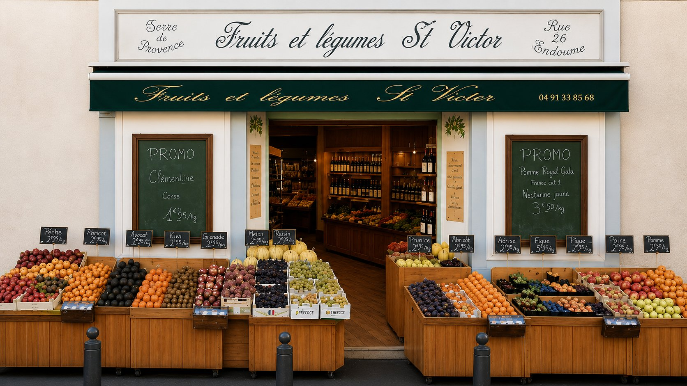
Primeur & épicerie fine · Endoume — Saint-Victor, Marseille 7e
Fruits et légumes gorgés de soleil, choisis chaque matin chez les producteurs de la région. Une adresse de quartier qui prend le temps de bien faire, depuis plus de quinze ans.
Ce qui nous tient à cœur
Pas de superflu, pas de promesses en l'air. Juste des produits choisis avec soin et une façon de faire qu'on n'a jamais voulu changer.
On travaille avec des producteurs de la région, au plus près des récoltes. Le moins d'intermédiaires possible, pour que vous y gagniez en fraîcheur et en goût.
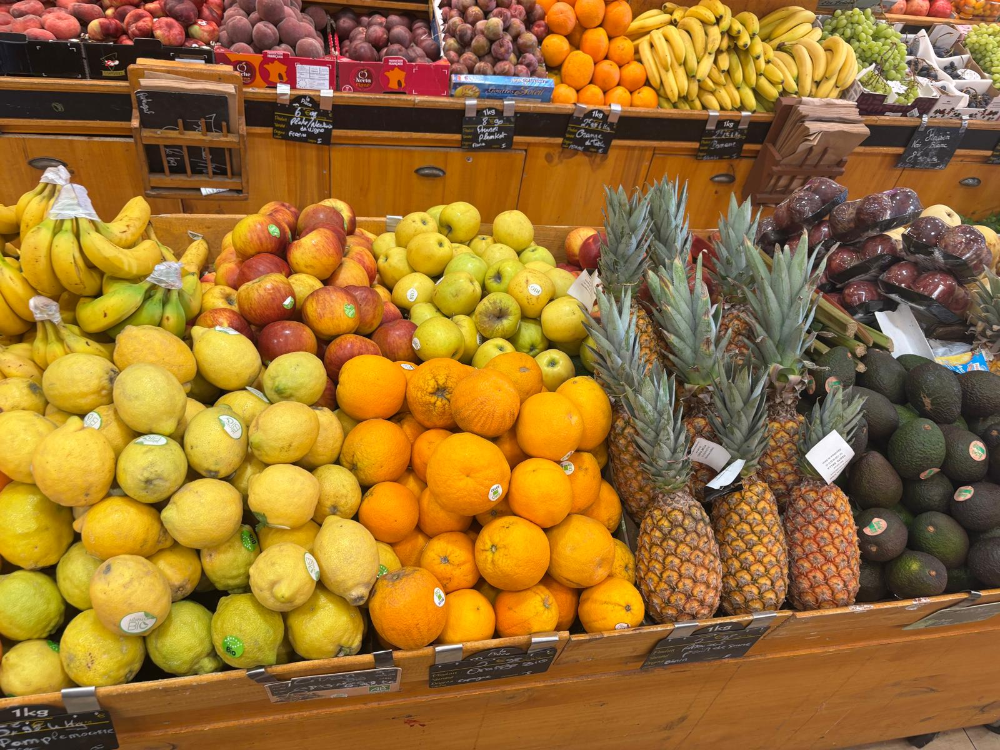
Au fil des saisonsChaque jour, les étals se renouvellent. On goûte, on trie, on garde le meilleur. Ce qui n'est pas à la hauteur ne finit pas sur nos cagettes.
On respecte le calendrier de la nature. Les variétés se succèdent au fil des mois, cueillies à maturité, choisies pour leur goût avant tout.
On connaît nos habitués, on conseille, on prend le temps. Ici, on vient pour les produits et on revient pour le sourire.
+15
années à régaler le quartier, 7 jours sur 7
Ce qu'on aime en ce moment
L'étal se pare de couleurs. Voici ce qu'on vous conseille les yeux fermés, cueilli à maturité et choisi le matin même.
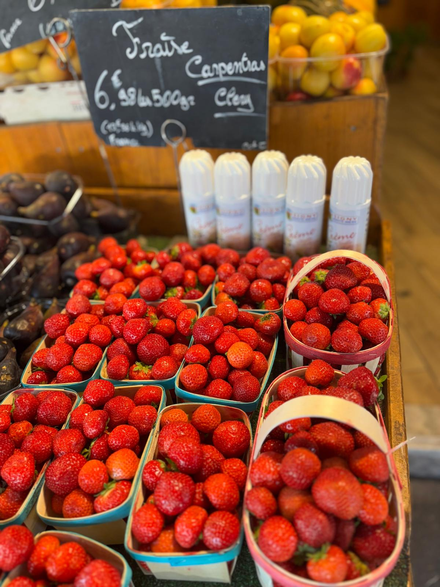
Sucrées, parfumées, le vrai goût du début d'été. À déguster nature, ou sur une tarte encore tiède.
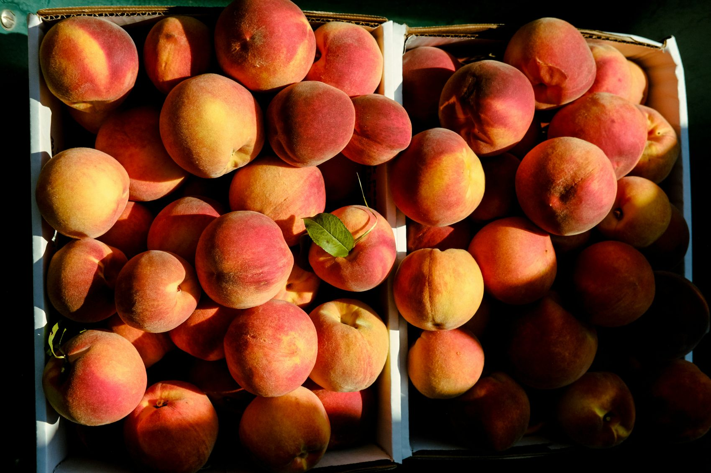
Juteux et fondants, l'essence de juillet en avance.
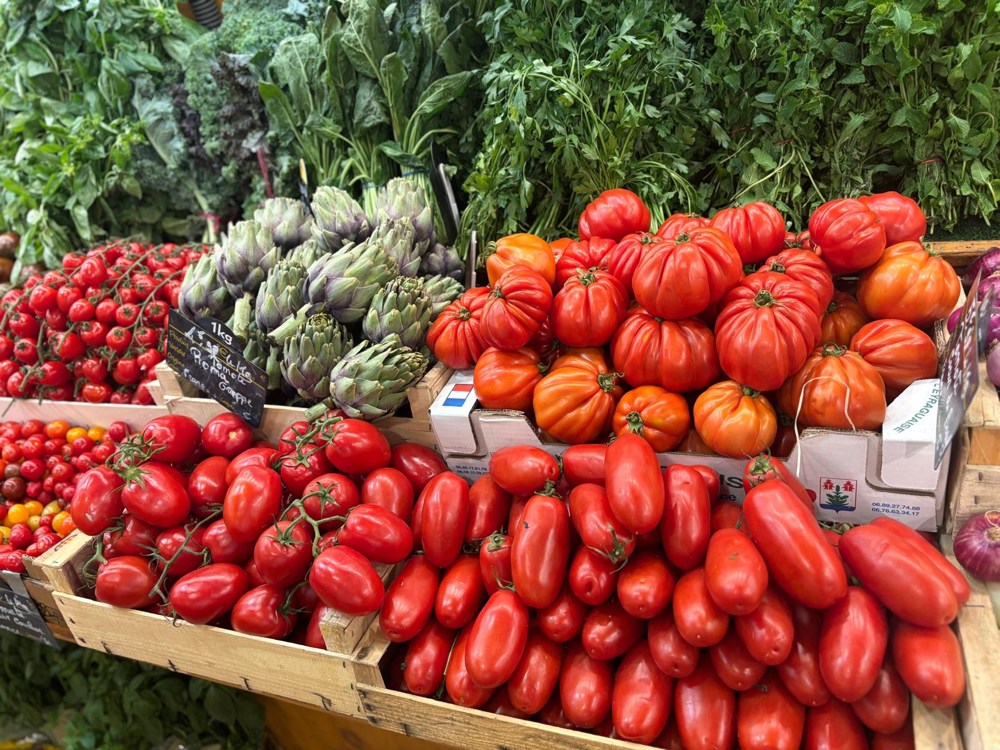
Anciennes, charnues. Un filet d'huile d'olive et c'est l'été.
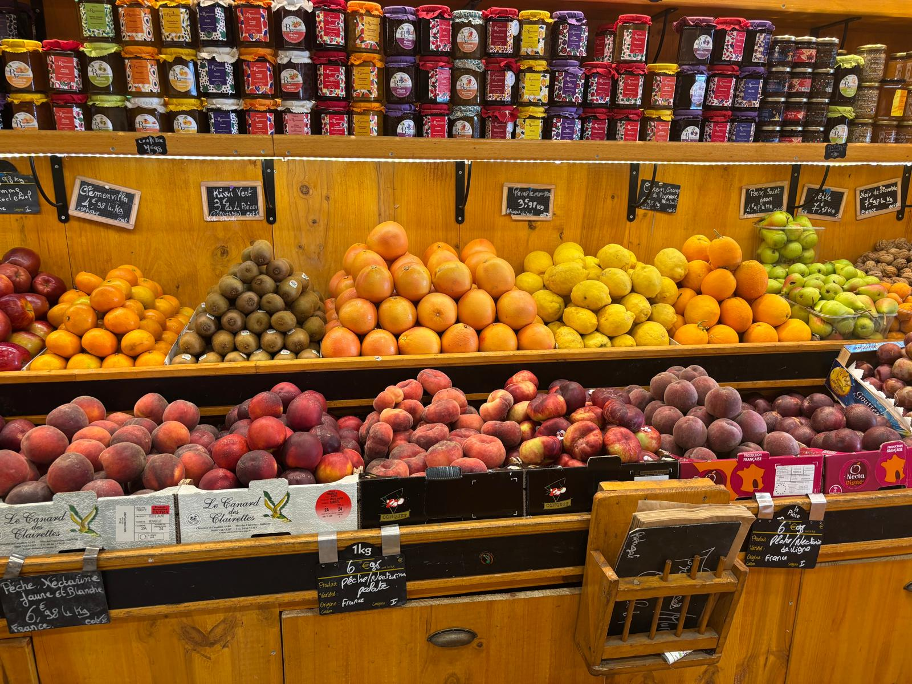
Melons parfumés et agrumes, à croquer dès le retour du marché.
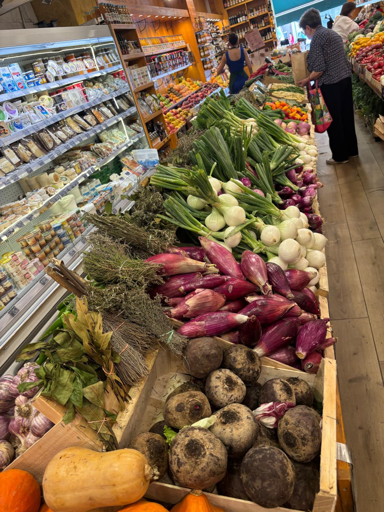
Courgettes, aubergines, poivrons, herbes fraîches. Tout pour une vraie ratatouille.
La maison
Le meilleur du frais et les belles choses de l'épicerie fine, réunis sous le même toit.
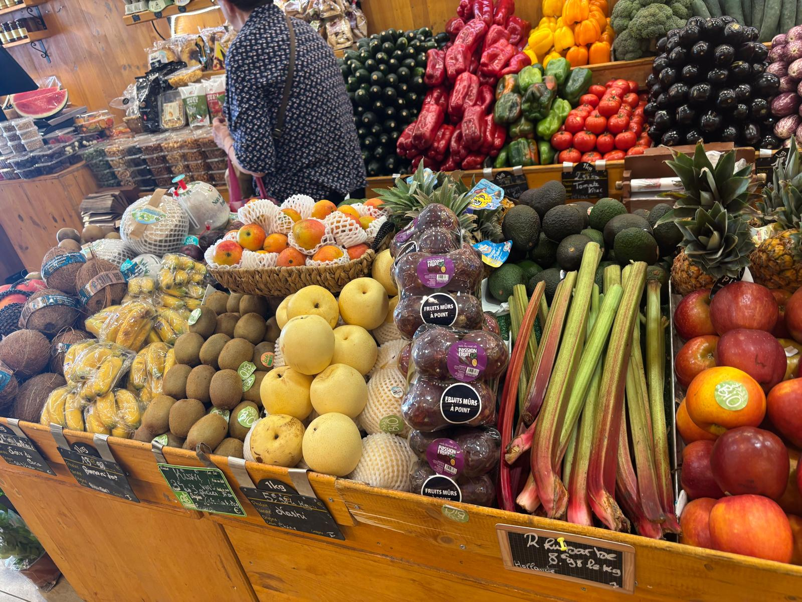
Des variétés qui se succèdent au fil des mois, choisies pour leur goût. Arrivages renouvelés chaque matin, conseils de préparation offerts avec le sourire.
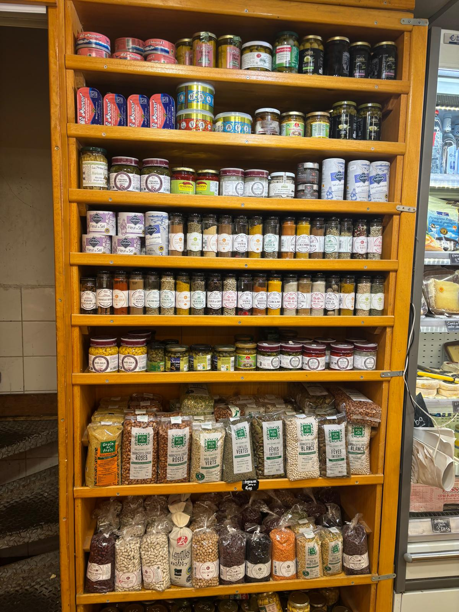
À côté des étals, une sélection de produits d'exception pour prolonger le plaisir à table : huiles d'olive, tapenades, miels, fromages affinés et idées cadeaux.
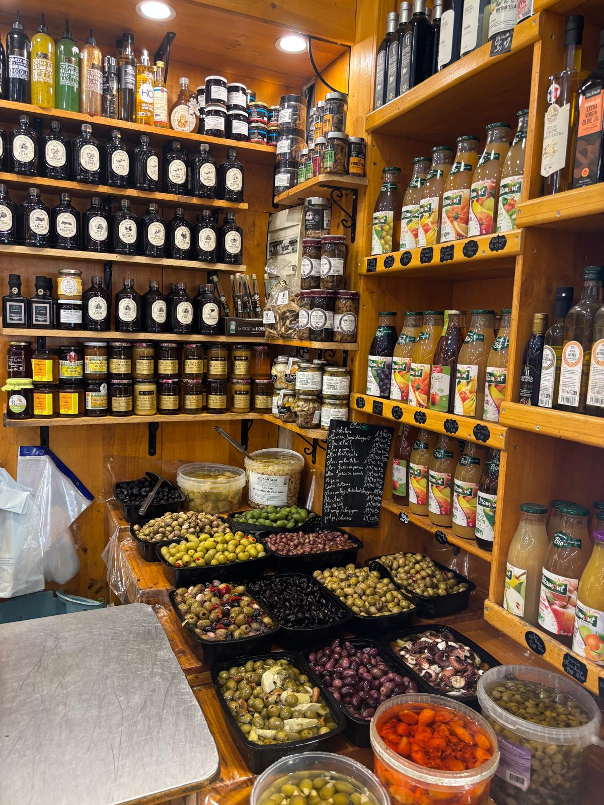
La cave à olives
Vertes, noires, cassées, à la grecque, piquantes ou marinées aux herbes de Provence. Une sélection généreuse où chaque variété a son caractère, toutes aussi savoureuses les unes que les autres.
Goûtez, comparez, repartez avec vos préférées.
Nos producteurs
La plupart de nos fruits et légumes viennent d'à côté. Des maraîchers et des arboriculteurs de la région que l'on connaît, qui récoltent à maturité et nous livrent au plus près du moment où c'est bon. Pas d'intermédiaires inutiles : juste le chemin le plus court entre leur champ et votre table.
On en parle dans le quartier
Ce qu'on préfère, c'est quand vous repartez le panier plein et le sourire aux lèvres.
Le meilleur primeur du quartier, sans hésiter. Les fruits sont mûrs à point et l'accueil est toujours adorable. Je ne fais plus mes courses ailleurs.
On sent que tout est choisi avec soin. Les tomates ont enfin le goût de mon enfance. Et la cave à olives vaut le détour à elle seule.
Des produits frais, de saison, et des conseils qui font la différence en cuisine. Une vraie adresse de quartier comme on n'en trouve presque plus.
Avis représentatifs · retrouvez-nous sur Google
Livraison sur Marseille : composez votre panier par téléphone, on prépare tout et on s'occupe du reste. Le marché, sans bouger de chez vous.
Commander par téléphone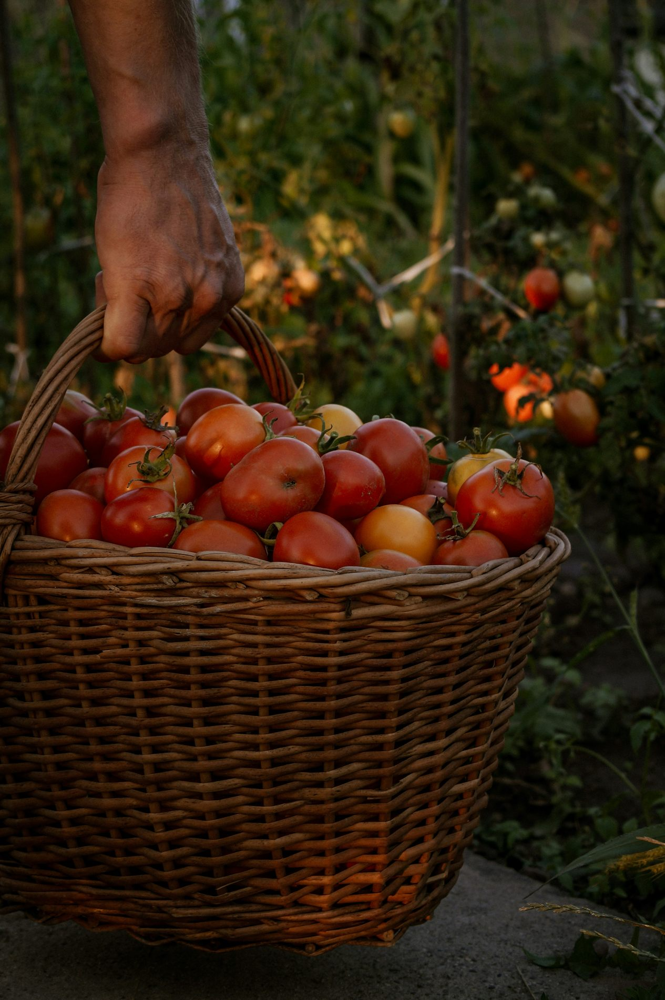
04 91 33 85 68 Appelez avant 12hNous trouver
On vous attend au cœur d'Endoume. Poussez la porte, et laissez-vous tenter.